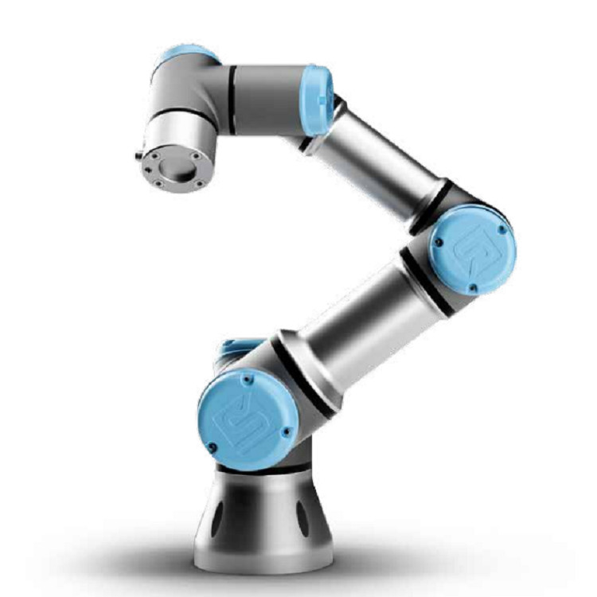

Conceito
Os robôs colaborativos, ou cobots, são projetados para trabalhar diretamente ao lado de operadores humanos, sem a necessidade de grades de proteção. Diferente dos robôs industriais tradicionais, os cobots possuem sensores de força e torque que detectam contato inesperado e interrompem o movimento automaticamente, garantindo segurança na interação homem-robô.

Princípio de funcionamento
Cobots utilizam sensores de força em cada junta para monitorar o torque aplicado durante o movimento. Caso haja resistência inesperada (como o contato com uma pessoa), o robô reduz a velocidade ou para imediatamente. Além disso, costumam contar com interfaces de programação simplificada, muitas vezes por meio de movimentação manual do braço (programação por demonstração).
Principais características técnicas
| Graus de liberdade | Geralmente 6 |
|---|---|
| Tipo de movimento | Articulado, com juntas rotativas |
| Precisão | Alta |
| Velocidade | Reduzida por segurança (ajustável) |
| Capacidade de carga | Baixa a média (até ~25 kg) |
| Segurança | Sensores de força/torque, parada automática por contato |
Aplicações industriais
- Montagem colaborativa em linhas de produção;
- Auxílio em tarefas repetitivas junto a operadores humanos;
- Inspeção de qualidade;
- Manuseio de pequenas peças em bancadas compartilhadas;
- Embalagem e paletização em pequenas e médias empresas.
Integração com automação e IoT
Os cobots são, por natureza, altamente conectados: a maioria já vem de fábrica com interfaces de rede, APIs abertas e suporte a protocolos como MQTT, permitindo integração direta com plataformas de nuvem, painéis de controle de produção e sistemas de manutenção preditiva. Essa conectividade nativa faz dos cobots um dos símbolos mais claros da convergência entre robótica e Internet das Coisas na Indústria 4.0.